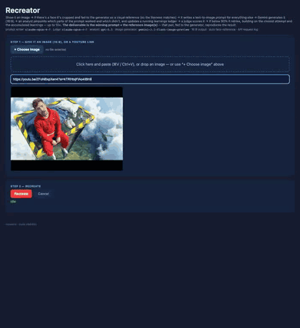
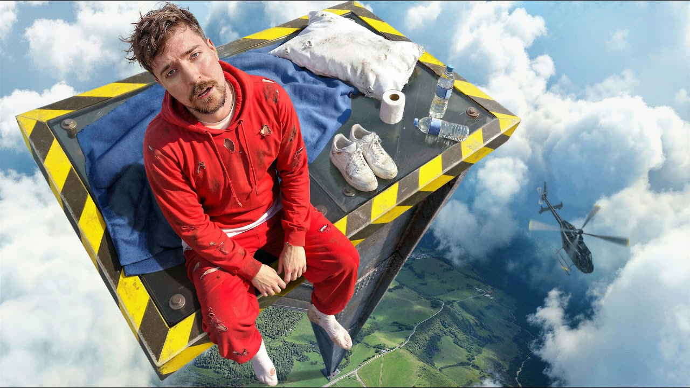

An automated browser drove the live recreator through a complete 10-iteration run on the thumbnail of youtu.be/ZFoNBxpXen4 — then the resulting prompt + face reference were fed back to Gemini, independently, to see if they reproduce the image. Below: the run (timelapse + frame-by-frame scrubber), the deliverable, and the independent reproduction.
You give it an image (or a YouTube link — it fetches the thumbnail). It runs a loop: AWS Rekognition crops the face(s) → Claude writes a text-to-image prompt for everything else → Gemini (gemini-3.1-flash-image-preview) generates a 16:9 image from [prompt] + [face crop(s)] → Claude judges it 0–100 → a GPT-5.5 analyst says which prompt phrasings worked / which didn't and grows a "learnings ledger" → Claude rewrites the next prompt from the closest attempt so far + that ledger → repeat, up to 10×. The deliverable is the winning prompt + the reference face crop(s) — that pair, fed to a text-to-image model, reproduces the result.
Source thumbnail: youtu.be/ZFoNBxpXen4 · run took ~16 min · result: best 78% — won on iteration 10 judge threshold 90%, so "best effort"

Judge scores per iteration. They bounce — Gemini renders the same prompt slightly differently each time, and a prompt edit that fixes one thing can nick another — but the loop always keeps and returns the best attempt (iteration 10 here, 78%).

loading…
This crop (cut out of the original by AWS Rekognition) was fed to Gemini alongside the prompt — a text prompt can't pin down a specific person's face, so the crop carries the likeness while the prompt carries composition, objects, colors, text, style.
Take only the winning prompt + the face crop above — feed them to Gemini in one fresh, standalone call (no loop, no judge, no analyst). If the deliverable is real, the output should look like the original.
Reproduced via a direct call to gemini-3.1-flash-image-preview with exactly the two artifacts above. (Same thing works by pasting the prompt + uploading the face crop into Google AI Studio's image playground — the "Nano Banana" / Gemini-image models.)